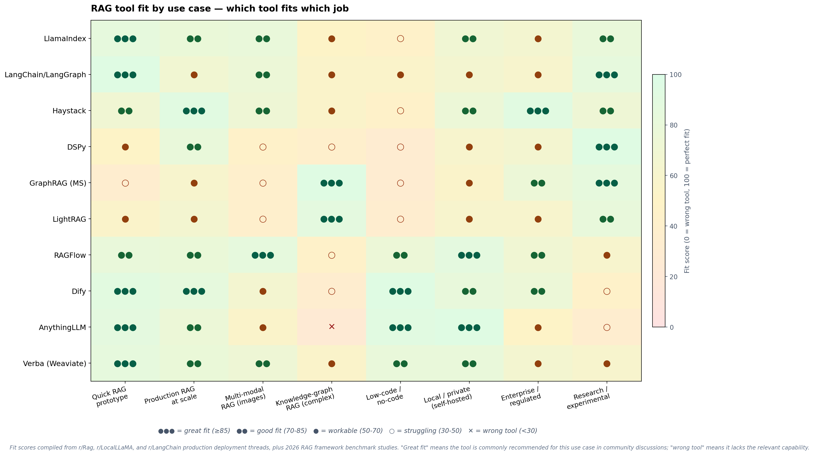
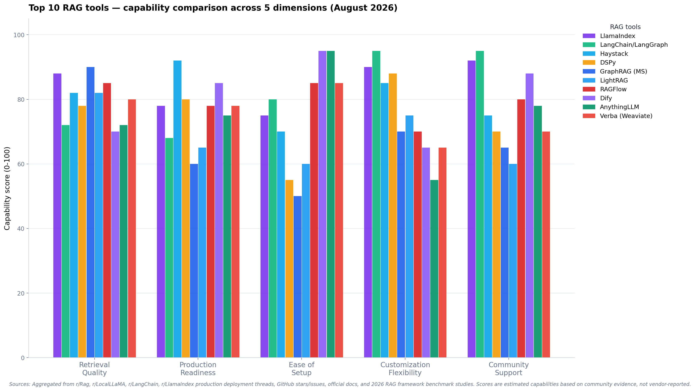

If LLMs are the brain of a local AI stack, embeddings, rerankers, and OCR are the eyes and memory. They decide what your model can see (OCR), how it retrieves knowledge (embeddings), and how it picks the best matches (rerankers). 2026 delivered a wave of new open-weight models in all three categories — several of which run entirely in GGUF on consumer hardware. Here's the complete guide to the top 20.

🚀 Key Takeaway
RAG quality is now decided before the LLM ever sees a prompt. The best 2026 stacks pair a strong multilingual embedder (BGE-M3 or Qwen3-Embedding) with a small fast reranker (Jina v3.5 or BGE-Reranker-v2-M3) and a modern OCR model (DeepSeek-OCR or PaddleOCR-VL) — all running locally with zero API costs.

Top Embedding Models (8)
1. BGE-M3 — The Hybrid Multilingual Default
The long-standing gold standard for local RAG. BGE-M3 supports dense + sparse + multi-vector retrieval in one model across 100+ languages, making it the most flexible embedder for hybrid search pipelines.
- ~568M parameters · 8K context · Apache 2.0
- Hybrid retrieval: Dense, sparse (BM25-style), and ColBERT multi-vector in a single model
- Local reality check: Tiny footprint, GGUF on Local AI Zone
2. Qwen3-Embedding-8B / 4B / 0.6B — The New Frontier Family
Alibaba's 2025-2026 embedding generation tops multilingual retrieval leaderboards with a massive 32K context window — the only embedders that comfortably handle long documents out of the box.
- 8B / 4B / 0.6B sizes · 32K context · Apache 2.0
- 100+ language coverage with deep semantic alignment from the Qwen3 base
- Local reality check: 0.6B fits anywhere; 4B is the sweet spot; 8B for maximum quality. All GGUF on Local AI Zone
3. Nomic Embed v2 (MoE) — The Efficiency Champion
Nomic's second-generation embedder uses a Mixture-of-Experts design that matches much larger dense models at a fraction of the compute — the smart pick for embedding-heavy pipelines.
- MoE architecture · Matryoshka-dimension flexible · Apache 2.0
- Excellent retrieval quality per FLOP for its size class
- Local reality check: Runs on modest hardware; GGUF on Local AI Zone
4. Llama-Embed-Nemotron-8B — The Heavy-Duty Retrieval Leader
NVIDIA's 8B embedder leads the 2026 accuracy leaderboards on heavy retrieval tasks like TechQA and MedRAG, using an asymmetric query/document instruction setup.
- 8B parameters · Llama-3.1 backbone · NVIDIA Open Model License
- Best-in-class for dense technical/legal/medical RAG
- Local reality check: Demands 16GB+ RAM — worth it for high-stakes retrieval · Hugging Face →
5. Microsoft Harrier-oss-v1 (0.6B) — The MIT Punching Bag
Built on a Qwen base, Harrier punches far above its weight class, ranking among the top open models overall while shipping under a permissive MIT license — the safest choice for commercial self-hosted RAG.
- 0.6B parameters · MIT license (no restrictions)
- Top-3 open model quality at a fraction of the size
- Local reality check: Runs on any modern machine · Hugging Face →
6. EmbeddingGemma-300M — The Ultra-Efficient Multilingual Option
Google's tiny embedder runs roughly 4× cheaper than larger models while staying strong on MTEB — the best cost-per-quality ratio for high-volume indexing.
- 300M parameters · excellent multilingual text embedding
- Designed for edge and batch workloads
- Local reality check: Embarrassingly cheap to run — millions of chunks per hour on one machine · Hugging Face →
7. mxbai-embed-large-v1 — The Apache 2.0 Workhorse
Mixedbread's 335M embedder was the long-time open benchmark champion and remains a rock-solid production default with universal tooling support.
- 335M parameters · 512 tokens · Apache 2.0
- Superior BEIR/MTEB performance for its size when released
- Local reality check: GGUF on Local AI Zone
8. Arctic-Embed-M-v1.5 — The Fine-Tunable Foundation
Snowflake's medium embedder balances multilingual quality with extreme ease of fine-tuning — popular for domain-specialized retrieval.
- ~110M parameters · Apache 2.0
- Strong out-of-the-box + cheap to fine-tune
- Local reality check: GGUF on Local AI Zone
Top Reranker Models (6)
1. Jina Reranker v3.5 — The 2026 Speed King
Jina's newest reranker (0.6B) introduces efficient listwise reranking — scoring multiple documents concurrently instead of pair-by-pair — drastically cutting inference latency while rivaling 4B+ models.
- 0.6B · 8K-32K context · Apache 2.0
- Exceptional BEIR scores on legal, medical, and structured data
- Local reality check: Official GGUF + Apple Silicon MLX ports; tiny and fast · Hugging Face →
2. Qwen3-Reranker (0.6B / 4B / 8B) — The Accuracy Apex
Qwen3-based rerankers top standard MTEB and multilingual search benchmarks, with the 4B and 8B variants at the absolute apex of open-weight retrieval accuracy across 100+ languages and a 32K context.
- 0.6B / 4B / 8B · 32K context · Apache 2.0 / Qwen license
- Best multilingual reranking quality available in open weights
- Local reality check: 4B is the sweet spot; GGUF community builds available · Hugging Face →
3. BGE-Reranker-v2-M3 — The Universal Lightweight
The gold standard lightweight multilingual reranker — 568M parameters on an XLM-RoBERTa backbone, handling 100+ languages with universal tooling support in every RAG framework.
- 568M parameters · Apache 2.0
- Harmonizes with dense, sparse, and multi-vector systems
- Local reality check: Runs anywhere — FlagEmbedding, sentence-transformers, ONNX · Hugging Face →
4. BGE-Reranker-v2.5-Gemma2 — The Reasoning Reranker
A 2B Gemma-2 backbone converted into a cross-encoder — giving it deep reasoning when scoring logical contradictions between query and document, far beyond traditional 500M transformer rerankers.
- ~2B parameters · 2K-8K context · Gemma terms
- Excels at complex reasoning and scientific retrieval
- Local reality check: GGUF/AWQ quantizations available · Hugging Face →
5. mxbai-rerank-large-v2 — The RL-Tuned Precision Pick
Mixedbread's reranker is optimized via reinforcement learning to minimize false positives — the right choice when precision matters more than recall.
- ~1.5B-2B parameters · Apache 2.0
- RL-optimized precision on BEIR and MTEB retrieval subsets
- Local reality check: GGUF, ONNX, and MLX builds available · Hugging Face →
6. Zerank-2 — The Instruction-Following Specialist
Zerank-2 tops modern ELO reranking leaderboards on sorting and strict instruction-following tasks — perfect for complex queries like "prioritize documents mentioning X, exclude Y."
- ~1.7B-4B variants · mixed license (open subset)
- Purpose-built for instruction-conditioned retrieval
- Local reality check: Deployable via PyTorch/HF pipelines · Hugging Face →
Top OCR Models (6)
1. DeepSeek-OCR — The Dense Document Powerhouse
DeepSeek's ~3B OCR model excels at high-ratio visual-text compression and dense document markdown parsing — turning messy scanned PDFs into clean, LLM-ready markdown.
- ~3B parameters · MIT/Apache 2.0
- Best-in-class structured markdown output for complex layouts
- Local reality check: GGUF on Local AI Zone
2. GLM-OCR — The Tiny Table & Formula Master
Zhipu's 0.9B OCR model is the surprise of 2026 — exceptional at complex document understanding, tables, and formula recognition despite its tiny size.
- 0.9B parameters · MIT (model) / Apache 2.0 (code)
- Best-in-class table and math/formula extraction per parameter
- Local reality check: GGUF on Local AI Zone — runs on modest hardware
3. PaddleOCR-VL — The 100+ Language Workhorse
PaddleOCR-VL (0.9B) handles multilingual document parsing across 100+ languages with complex element and seal recognition — the most battle-tested open OCR pipeline.
- 0.9B parameters · Apache 2.0
- 100+ language support with layout, table, and seal recognition
- Local reality check: GGUF on Local AI Zone
4. Nanonets-OCR-s — The Rich Markdown Converter
Nanonets' ~3B open model converts documents to rich markdown with signature and watermark detection, plus strong form extraction for business documents.
- ~3B parameters · Apache 2.0
- Signature/watermark detection + form extraction
- Local reality check: GGUF on Local AI Zone
5. Surya v2 — The Fast Layout Specialist
Surya v2 (650M) focuses on fast multilingual line detection, layout analysis, and table recognition — a lightweight pipeline component rather than a monolithic OCR model.
- 650M parameters · Apache 2.0 (code) / Open Rail-M (weights)
- Excellent layout & reading-order analysis
- Local reality check: Very fast on CPU · Hugging Face →
6. olmOCR v2 — The PDF Linearization Expert
The Allen Institute's 7B OCR model excels at PDF linearization and reading-order preservation — ideal for turning entire PDF corpora into LLM training or RAG datasets.
- 7B parameters · Apache 2.0
- High-throughput LLM dataset extraction
- Local reality check: Demands 16GB+; the choice for batch document pipelines
Local Deployment Comparison
Every model above runs locally. Here's the quick-reference table with GGUF links for the models available on Local AI Zone:
| Category | Model | Size | Context | License | Best For |
|---|---|---|---|---|---|
| Embedding | BGE-M3 | 568M | 8K | Apache 2.0 | Hybrid multilingual RAG |
| Embedding | Qwen3-Embedding-4B | 4B | 32K | Apache 2.0 | Max multilingual quality + long docs |
| Embedding | Nomic Embed v2 | MoE | 8K | Apache 2.0 | Efficiency per FLOP |
| Embedding | mxbai-embed-large | 335M | 512 | Apache 2.0 | Proven production default |
| Embedding | Arctic-Embed-M | 110M | 512 | Apache 2.0 | Cheap fine-tuning |
| OCR | DeepSeek-OCR | 3B | — | MIT | Dense markdown parsing |
| OCR | GLM-OCR | 0.9B | — | MIT | Tables + formulas |
| OCR | PaddleOCR-VL | 0.9B | — | Apache 2.0 | 100+ languages |
| OCR | Nanonets-OCR-s | 3B | — | Apache 2.0 | Markdown + signatures |
⚡ Building the Perfect Local RAG Stack
- Budget setup (8GB RAM): BGE-M3 embed → BGE-Reranker-v2-M3 rerank → GLM-OCR for documents
- Balanced setup (16GB): Qwen3-Embedding-0.6B/4B embed → Jina Reranker v3.5 → PaddleOCR-VL
- Max quality (32GB+): Qwen3-Embedding-8B embed → Qwen3-Reranker-4B → DeepSeek-OCR
Why These Three Matter Together
🔄 OCR Feeds the Index
Before you can embed a scanned PDF, an OCR model has to read it. Modern OCR (DeepSeek-OCR, GLM-OCR) outputs clean markdown — preserving tables, formulas, and reading order — so your embeddings capture structure, not OCR garbage.
🔍 Embeddings Do the Recall
Embeddings turn documents into vectors and find the best candidate set. In 2026 the frontier moved to hybrid retrieval — dense + sparse + multi-vector — which BGE-M3 and Qwen3-Embedding both support natively.
🎯 Rerankers Do the Precision
After recall, a reranker re-scores the top candidates with full cross-encoder attention — the single highest-impact upgrade you can make to RAG quality. Jina v3.5's listwise scoring made it fast enough to use on every query, not just the tricky ones.
💎 Summary
Your RAG pipeline is only as good as its weakest link. In 2026, that means pairing a modern embedder with a fast reranker and a real OCR model — all three now available as open weights that run entirely on your own hardware.
Start with the balanced stack (Qwen3-Embedding-4B → Jina Reranker v3.5 → PaddleOCR-VL) and upgrade each piece as your needs grow. Every GGUF is one download away on Local AI Zone.